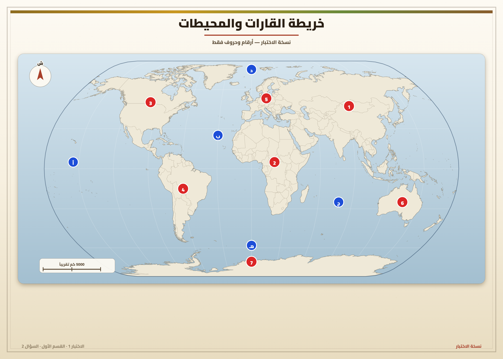
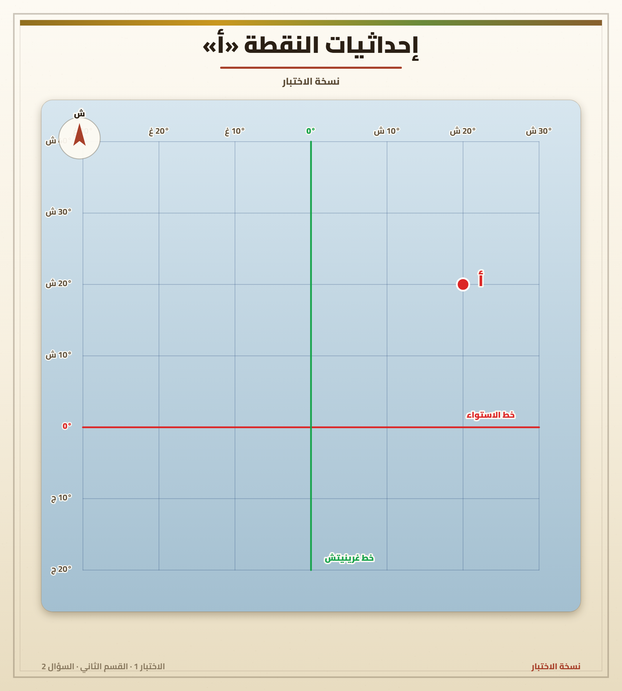

📜 فرض مراقبة عدد 1 - جغرافيا - سابعة أساسي
👨🏫 الأستاذ: غير مذكور
📅 السنة الدراسية: غير مذكور
📚 المستوى: 7 أساسي
🏫 المؤسسة: غير مذكور
⏱️ التوقيت: 30 دقيقة
📝 الثلاثي الأول
🌍 الجغرافيا (20 نقطة)
الإسم و اللقب:
7 أساسي العدد الرتبي ()
📌 القسم الأول: (8 نقاط)
1) سجّل هذه البحار في المكان المناسب من الجدول: (3 ن)
بحر الشمال —
بحر آرال —
البحر الأحمر —
البحر الأسود —
بحر العرب —
بحر قزوين
| بحار مغلقة | بحار خارجية | بحار داخلية |
|---|---|---|
2) أكمل الفراغات، ثم لوّن القارات بالأصفر والمحيطات بالأزرق: (5 ن)

💡 على النسخة الورقية: لوّن القارات بالأصفر والمحيطات بالأزرق، والأرقام على الخريطة تشير إلى القارات (1–7) والحروف إلى المحيطات.
القارات:
1
2
3
4
5
6
7
المحيطات:
أ
ب
ج
د
هـ
من القارات: أقيانوسيا
📝 القسم الثاني: (10 نقاط) — تحليل وثيقة
1) أكمل تعريف الإحداثيات الجغرافية والغاية منها: (3 ن)
هي خطوط وخطوط ، تتكوّن من خطوط ، وتُستخدم لـ .
2) استخرج من الرسم إحداثيات النقطة «أ»: (4 ن)

- • تقع النقطة «أ»
- • خط الاستواء على بعد
- • خط غرينيتش على بعد
3) هل يمكن الاستغناء عن أي صنف من الخطوط؟ (3 ن)
الجواب:
علّل إجابتك:
✨ الصياغة والتنظيم: 2 نقاط (سلامة اللغة، وضوح الخط، حسن تنظيم الورقة).